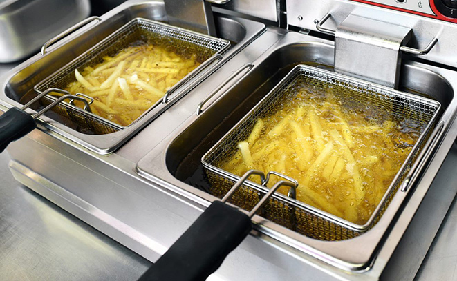

Knuspriges
Wiener
Schnitzel
Das klassische
Wiener
Schnitzel -
Rezept
wird am
liebsten
sonntags
mit
Petersilkartoffeln
oder
Reis serviert.
Richtig abgerundet
wird unser
Wiener Schnitzel
mit einem
herzhaft-
gschmackigen
Kartoffelsalat!
öffnen
Lust auf was Neues?

Essen aus der Fritteuse oder Heißluftfritteuse: Was schmeckt besser?
Sie wollen bei der Entscheidung, ob Fritteuse oder Heißluftfritteuse vor allem aus der Geschmacksperspektive heraus Ihre Wahl treffen? Da Fett ein Geschmacksträger ist, schmecken den meisten frittierte Speisen aus einer normalen Fritteuse besser als aus einer Heißluftfritteuse. Hingegen gibt es auch Genussmenschen, die die Heißluftfritteuse dem herkömmlichen Backofen geschmacklich vorziehen. Tiefgekühlte Pommes sind bereits vorfrittiert und unterscheiden sich daher geschmacklich kaum, unabhängig davon, ob sie in der Heißluftfritteuse oder im Backofen oder in einer normalen Fritteuse zubereitet wurden.
